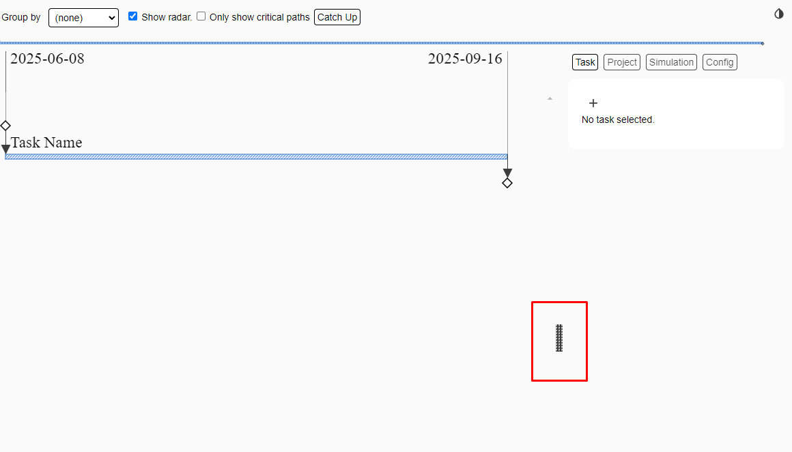

: Insert a new task to
the
project
: Insert a new task to
the
projectExplan is a visual project planning tool for VS Code that helps create, edit, and explore project timelines with ease.
Supports both dark mode and light mode:
None.
Install Explan directly from the VS Code Marketplace:
https://marketplace.visualstudio.com/items?itemName=Explan-org.explan
Or search for ‘Explan’ in the extensions panel within VS Code (Ctrl + Shift + X).
Once installed, choose one of the two ways of creating an Explan file:
1. Create a file with the extension of .explan, .explan.json, or
.explan.png and open it using VS Code
or
2. Run the Explan: Create new Explan Document action via the command palette (Ctrl + Shift + P)
Either way, VS Code start up an empty Explan file with an interface that looks like this:
Press Shift-Ctrl-H to display all the keyboard shortcuts.
Use the navigation buttons in the top-right to switch between the “Task,” “Project,” “Simulation,” and “Config” panels.

The right-hand panels can be resized by dragging on the left side notch of the panel.
Click on a task on the left-hand side to “select” it. The details will appear in the Task tab if it is open.
Double clicking on a task will “Zoom” into it. In the zoomed mode, only the selected task and its immediate successors and predecessors will be displayed. Additionally, in the zoomed mode, single clicks on other tasks will move the “Zoom” focus onto that task. To exit the “Zoom” view and return to the full project view, double click on empty space around the tasks.
Keyboard shortcuts can also be used to navigate between zoomed in tasks.
The radar shows a visual summary of the entire project. Clicking and dragging the mouse on the radar will change the task display to show only the radar selected portion of the project.
The radar view can be toggled on and off using the “Show radar” checkbox at the top of the screen.
Using Ctrl-F will bring up a searchable list of all tasks in the project. The search is a fast fuzzy search, meaning that it will identify partial matches as well as full matches.
Navigate the search results using the up, down, and enter keys. The currently selected result is indicated by a line that is highlighted in blue. To enter a zoomed view of the selected result, press Ctrl-Enter.
A task can be edited by clicking the task name on the left-hand panel. This will select the task and display all task details on the right-hand panel, also known as the “Task” tab.
Within the Task tab, you are able to view and manipulate all of the selected task’s properties, as well as access 4 quick shortcuts.
: Insert a new task to
the
project
: Duplicate the selected task. The duplicate will have the same predecessors and successors as the original task.
: Split a task into two tasks of equal halves. The resulting two tasks will both be half the duration of the original. The second half will be a successor of the first task.
: Delete the selected task.
| Name | The name of your task. The default value is “Task Name.” |
|---|---|
| Description | A field to describe the task. This field is optional. |
| Duration |
The length of time that the task will take to complete. The units of time can be changed in the “Project” tab as total days(7), weekdays(5) and unitless. Syntax is Months(m) Weeks(w) Days(d). For example: If your start date is 1/1 on Monday, and your task duration is 1w in total days (7), you will end on 1/8. If your task duration is 1w in weekdays (5), you will end on 1/6. |
| Uncertainty | The measure of how unpredictable a task’s duration is. Selectable values are low, moderate, high, and extreme. The uncertainty multipliers are the same as used in Jacob Kaplan Moss's software estimation technique. |
| Predecessors | Tasks that must be completed before the selected task can start. |
| Successors | Tasks that start after the selected task is completed. |
The following properties will only appear after a project has been marked as “Started” in the “Project” tab.
| Started | A boolean value that marks whether a task has been started. A date can be entered to define when the task started. |
|---|---|
| Finished | A boolean value that marks whether a task has been finished. A date can be entered to define when the task finished. |
| % Complete | The percentage that a task has been completed thus far. |
Toggle the “Only show critical paths” option to only view critical paths.
In Explan, the term "Catch Up" means to bring task completion % up to the red dotted line. The line denotes where task completion should be for that date to be "on time."
There are two buttons that can be used to “Catch Up” tasks with two different use cases.
The button at the top of Explan will catch up all task progress -- including those that are not yet started, up to the percentage they should be at for today's date, as denoted by the red bar.
For example:
Before:
After:
Note how the "Other" and "Critical Path Path 1" tasks are updated.
Also note how the % completion of "Started 80%" task isn't reduced.
The button found within individual task details can be used to catch up the selected task individually.
For example:
Before:
After:
Use the “Group by” dropdown to group your tasks based on a selected resource.
For example, tasks can be grouped by uncertainty.
The “Started” checkbox indicates whether or not the project has begun or not. A field is available to enter a project start date. Based on the project start date entered, a red line, the "today" marker, may appear on the task view.
In addition to default fields such as Name and Duration, users can add customized resources and metrics to the project to track trask information with.
| Resource | Options that have a finite set of options. For example, a “Person” resource might track who is working on each task.Note: The “Uncertainty” resource and values cannot be deleted or edited. |
|---|---|
| Metrics | Number values that can be tracked for each task. For example, “Cost” metric might be added to track the cost of each task. Note: The “Duration” metric and values cannot be deleted or edited. |
To add custom resources, use the right-hand panel navigation to click on the “Project” tab.
Add a new resource by clicking the icon under the “Resources” section.
Type in the name of a resource and hit “OK.”
The new resource will show up at the bottom of the list.
Add values to a resource by clicking the pencil icon to the right of the resource. The first value listed in the resource is used as the default value for every new task created.
In the above image, “Andy” will be the default “Person” value for all new tasks created.
Use the buttons to reorder the values.
: Move value up one row
: Move value down one row
: Move value to the top row
: Move value to the bottom row
Tip: For a “Person” resource, the first value could be entered as “Unassigned.” This way, all new tasks will have the value “Person: Unassigned.” This reflects practical use and the person resource can be assigned per task as you go.

To add custom resources, use the right-hand panel navigation to click on the “Project” tab.
Add a new metric by clicking the icon under the “Metrics” section.
Type in the name of a metric and hit “OK.”
The new metric will show up at the bottom of the list.
The precision, as well as the range of the values in a metric can be edited by clicking the pencil icon to the right of the resource.
The “Simulate” button simulates the entire project 100 times based on entered task durations and uncertainty levels. Clicking the “Simulate” button returns various statistics from the simulations.
The Critical Path section lists various changes to the critical path that happened in the simulation, along with the count of how many times the specific change happened.
This data can be used to get a better understanding of what tasks might be statistically important to port more resources to based on the frequency it shows up on the critical path.
The duration/frequency section lists out all tasks in the project.
For example, a task that was entered with a duration of one week and low uncertainty might have a high frequency of taking one week in the simulation.
Likewise, another one week task with high uncertainty might have a very low frequency of taking one week in the simulation due to the high uncertainty.
In the “Config” panel, you can edit the image export settings.
Editing the “Width (px)” setting will change what width of image will be generated upon saving the image as a PNG.
Toggling the “Transparent Background” option will remove the white background of the image when saved as a PNG.
Explans can be saved in two main formats, JSON (*.explan, *.explan.json) and PNG (*.explan.png).
View the sections below to learn how to change a file extension to switch between JSON and PNG.
Note: The “Only show critical paths” toggleable option will not alter the appearance of how an explan appears in image form. The entire project will appear.
Quick-save your file by pressing Ctrl-S in your VS Code window.
To save a file as a png, press Ctrl-Shift-S in your VS Code window. This is the keyboard shortcut for the “Save as…” function in VS Code. A dialog box should open, prompting users to enter a name and file extension.
Now, this file can be used as an image like any other .png file. Additionally, the file will still contain all of the plan data. Simply open up the .explan.png in VS Code, and the entire explan is editable with the explan extension.
The process to save in json format is the same. Simply replace the file extension with either “.explan” or “.explan.json”.
Press Shift-Ctrl-H to view a list of all keyboard shortcuts.
| alt-Delete | Deletes a task. |
|---|---|
| alt-Insert | Creates a new task. |
| ctrl-1 | Moves focus to the first successor task. |
| ctrl-2 | Moves focus to the second successor task. |
| ctrl-3 | Moves focus to the third successor task. |
| ctrl-4 | Moves focus to the fourth successor task. |
| ctrl-5 | Moves focus to the fifth successor task. |
| ctrl-6 | Moves focus to the sixth successor task. |
| ctrl-7 | Moves focus to the seventh successor task. |
| ctrl-8 | Moves focus to the eighth successor task. |
| ctrl-9 | Moves focus to the ninth successor task. |
| ctrl-f | Moves focus to search control. |
| ctrl-meta-1 | Moves focus to the first predecessor task. |
| ctrl-meta-2 | Moves focus to the second predecessor task. |
| ctrl-meta-3 | Moves focus to the third predecessor task. |
| ctrl-meta-4 | Moves focus to the fourth predecessor task. |
| ctrl-meta-5 | Moves focus to the fifth predecessor task. |
| ctrl-meta-6 | Moves focus to the sixth predecessor task. |
| ctrl-meta-7 | Moves focus to the seventh predecessor task. |
| ctrl-meta-8 | Moves focus to the eighth predecessor task. |
| ctrl-meta-9 | Moves focus to the ninth predecessor task. |
| ctrl-y | Redoes the most recent undo action. |
| ctrl-z | Undoes the last action. |
| shift-ctrl-< | Prompts for and adds a predecessor to the current Task. |
| shift-ctrl-> | Prompts for and adds a successor to the current Task. |
| shift-ctrl-F | Moves focus to search control and does a full search of all resource values. |
| shift-ctrl-H | Displays the help dialog. |
| shift-ctrl-M | Toggles dark mode. |
| shift-ctrl-R | Toggles the radar view. |
| shift-ctrl-V | Opens the developer panel. |
| shift-ctrl-Z | Undoes the zoom. |
| shift-ctrl-_ | Duplicates a task. |
| shift-ctrl-| | Splits a task. |